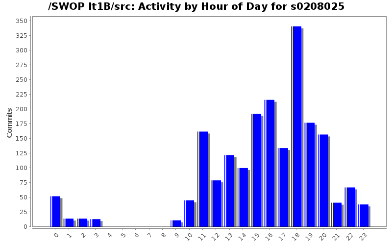
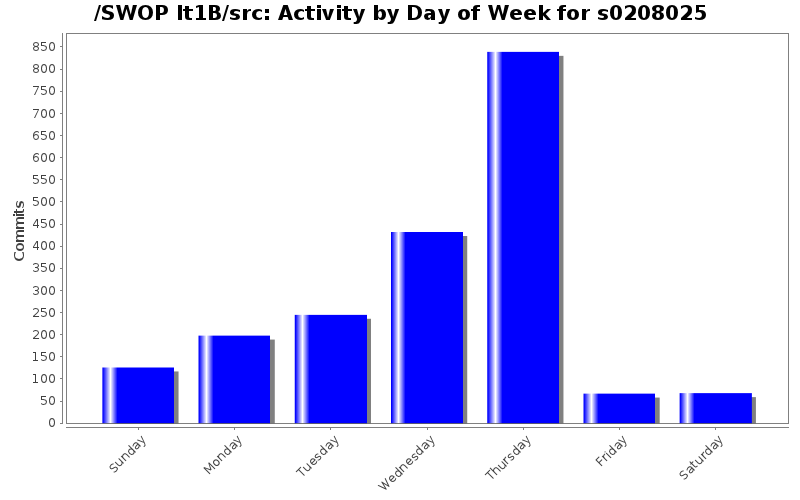
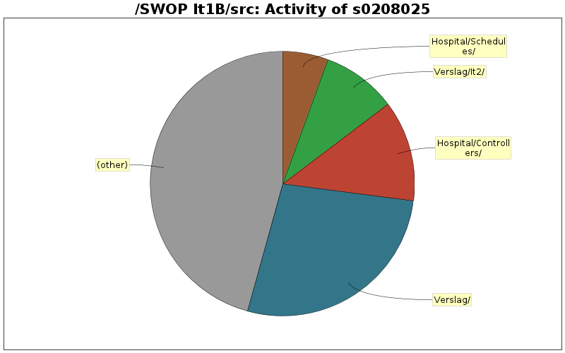

| Directory | Changes | Lines of Code | Lines per Change |
|---|---|---|---|
| Totals | 1975 (100.0%) | 15351 (100.0%) | 7.7 |
| Verslag/ | 86 (4.4%) | 4170 (27.2%) | 48.4 |
| Hospital/Controllers/ | 281 (14.2%) | 1906 (12.4%) | 6.7 |
| Verslag/It2/ | 11 (0.6%) | 1404 (9.1%) | 127.6 |
| Hospital/Schedules/ | 146 (7.4%) | 852 (5.6%) | 5.8 |
| Hospital/Argument/ | 70 (3.5%) | 627 (4.1%) | 8.9 |
| Hospital/Treatments/ | 141 (7.1%) | 575 (3.7%) | 4.0 |
| Hospital/WareHouse/Items/ | 42 (2.1%) | 508 (3.3%) | 12.0 |
| Hospital/World/ | 95 (4.8%) | 492 (3.2%) | 5.1 |
| Hospital/People/ | 88 (4.5%) | 488 (3.2%) | 5.5 |
| Hospital/Patient/ | 125 (6.3%) | 421 (2.7%) | 3.3 |
| Hospital/Schedules/Constraints/ | 80 (4.1%) | 360 (2.3%) | 4.5 |
| Verslag/Pictures/ | 6 (0.3%) | 357 (2.3%) | 59.5 |
| Hospital/MedicalTest/ | 117 (5.9%) | 349 (2.3%) | 2.9 |
| Hospital/Schedules/Constraints/Implementation/ | 13 (0.7%) | 322 (2.1%) | 24.7 |
| Hospital/WareHouse/ | 114 (5.8%) | 268 (1.7%) | 2.3 |
| Hospital/WareHouse/FoodStock/ | 7 (0.4%) | 234 (1.5%) | 33.4 |
| Hospital/Schedules/Constraints/Preference/ | 11 (0.6%) | 228 (1.5%) | 20.7 |
| Hospital/Machine/ | 48 (2.4%) | 209 (1.4%) | 4.3 |
| Hospital/WareHouse/ItemQueues/ | 8 (0.4%) | 169 (1.1%) | 21.1 |
| Hospital/Factory/ | 33 (1.7%) | 163 (1.1%) | 4.9 |
| Hospital/Schedules/ConstraintSolver/ | 13 (0.7%) | 148 (1.0%) | 11.3 |
| Hospital/People/PeopleFactories/ | 47 (2.4%) | 142 (0.9%) | 3.0 |
| Hospital/ | 14 (0.7%) | 128 (0.8%) | 9.1 |
| Hospital/WareHouse/OrderPlacers/ | 15 (0.8%) | 126 (0.8%) | 8.4 |
| Hospital/Exception/Warehouse/ | 17 (0.9%) | 119 (0.8%) | 7.0 |
| Hospital/Schedules/ScheduleGroups/ | 9 (0.5%) | 114 (0.7%) | 12.6 |
| Hospital/Exception/Arguments/ | 10 (0.5%) | 94 (0.6%) | 9.4 |
| Hospital/Exception/Scheduling/ | 7 (0.4%) | 80 (0.5%) | 11.4 |
| Hospital/Schedules/Constraints/Priority/ | 4 (0.2%) | 76 (0.5%) | 19.0 |
| Hospital/Exception/ | 58 (2.9%) | 76 (0.5%) | 1.3 |
| Hospital/Exception/Patient/ | 6 (0.3%) | 64 (0.4%) | 10.6 |
| Hospital/Schedules/Constraints/Warehouse/ | 3 (0.2%) | 51 (0.3%) | 17.0 |
| Hospital/Exception/Command/ | 2 (0.1%) | 31 (0.2%) | 15.5 |
| swopit1b/ | 2 (0.1%) | 0 (0.0%) | 0.0 |
| HospitalUI/WareHouseUI/ | 13 (0.7%) | 0 (0.0%) | 0.0 |
| HospitalUI/NurseUI/ | 32 (1.6%) | 0 (0.0%) | 0.0 |
| HospitalUI/MainUI/ | 10 (0.5%) | 0 (0.0%) | 0.0 |
| HospitalUI/DoctorUI/ | 60 (3.0%) | 0 (0.0%) | 0.0 |
| HospitalUI/AdminUI/ | 22 (1.1%) | 0 (0.0%) | 0.0 |
| HospitalUI/ | 57 (2.9%) | 0 (0.0%) | 0.0 |
| Hospital/Warehouse/ | 2 (0.1%) | 0 (0.0%) | 0.0 |
| Hospital/Schedules/Priority/ | 11 (0.6%) | 0 (0.0%) | 0.0 |
| Hospital/Schedules/Preference/ | 24 (1.2%) | 0 (0.0%) | 0.0 |
| Hospital/Exceptions/ | 2 (0.1%) | 0 (0.0%) | 0.0 |
| Hospital/Diagnosis/ | 1 (0.1%) | 0 (0.0%) | 0.0 |
| / | 12 (0.6%) | 0 (0.0%) | 0.0 |

Eclemma
3114 lines of code changed in 8 files:
Arguments en Conclusie en TestReport
0 lines of code changed in 1 file:
Commit verslag
0 lines of code changed in 1 file:
Het einde van de recursiviteit?
0 lines of code changed in 5 files:
Capsules, voor wie de jarfile ni wil zoeken :/
0 lines of code changed in 1 file:
Wie begint er recursief te commiten???
0 lines of code changed in 2 files:
stukje van Warehouse geschreven.
0 lines of code changed in 1 file:
Aanpassingen om svn beter te laten werken met latex. Elke zin op een regel...
En wat tekst bijgevoegd...
0 lines of code changed in 1 file:
Commit vergeten...
0 lines of code changed in 9 files:
Betere UI ;) vanuit de guts van ons systeem.
0 lines of code changed in 5 files:
Sysout weg
0 lines of code changed in 1 file:
HighLow -> toString
en bug in Stock
0 lines of code changed in 5 files:
Commentaar van Controllers
0 lines of code changed in 1 file:
Commentaar van Controllers
14 lines of code changed in 9 files:
Commentaar en refactoring
PublicArgument[] -> ArgumentList bij registerPatient
Alle tests werken. :)
0 lines of code changed in 9 files:
Commentaar en refactoring
0 lines of code changed in 8 files:
Search en Replace Campusses -> Campuses & campusses -> campuses
0 lines of code changed in 6 files:
Food werkt, en gerefactored.
0 lines of code changed in 1 file:
Food werkt, en gerefactored.
234 lines of code changed in 14 files:
Testen
0 lines of code changed in 3 files:
(174 more)